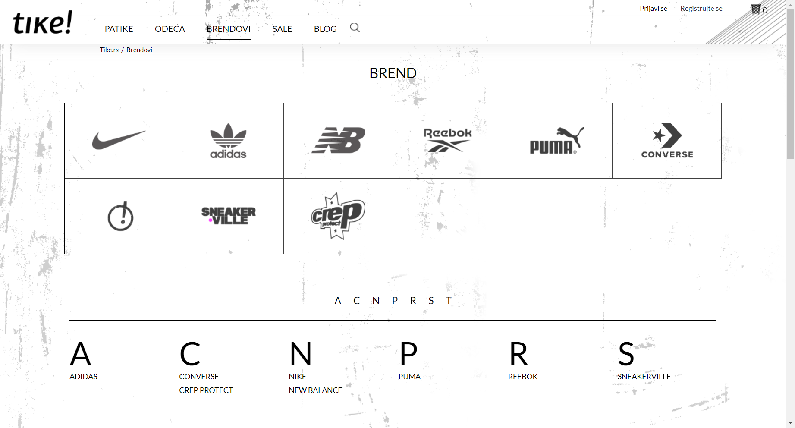

IdeaProjects/TikeZavrsniProjekat
NavigationBarTest:failureTest
Test Messages
Opening Chrome Driver
1. Go to: 'https://www.tike.rs'
2. On navigation bar click on 'BRENDOVI' category
3. Click on 'PUMA' brand from brand list
Test finished

Failure
org.openqa.selenium.NoSuchElementException: no such element: Unable to locate element: {"method":"xpath","selector":"//a[@title = 'PUMA false']"}
(Session info: chrome=99.0.4844.51)
For documentation on this error, please visit: https://www.seleniumhq.org/exceptions/no_such_element.html
Build info: version: '3.141.59', revision: 'e82be7d358', time: '2018-11-14T08:17:03'
System info: host: 'DESKTOP-VEURP85', ip: '192.168.1.4', os.name: 'Windows 10', os.arch: 'amd64', os.version: '10.0', java.version: '1.8.0_322'
Driver info: org.openqa.selenium.chrome.ChromeDriver
Capabilities {acceptInsecureCerts: false, browserName: chrome, browserVersion: 99.0.4844.51, chrome: {chromedriverVersion: 98.0.4758.48 (d869ab3eda606..., userDataDir: C:\Users\MILENK~1.MAJ\AppDa...}, goog:chromeOptions: {debuggerAddress: localhost:56006}, javascriptEnabled: true, networkConnectionEnabled: false, pageLoadStrategy: normal, platform: WINDOWS, platformName: WINDOWS, proxy: Proxy(), setWindowRect: true, strictFileInteractability: false, timeouts: {implicit: 0, pageLoad: 300000, script: 30000}, unhandledPromptBehavior: dismiss and notify, webauthn:extension:credBlob: true, webauthn:extension:largeBlob: true, webauthn:virtualAuthenticators: true}
Session ID: ae15799a9eed15a333fd83d4e6fe56ff
*** Element info: {Using=xpath, value=//a[@title = 'PUMA false']}
at sun.reflect.NativeConstructorAccessorImpl.newInstance0(Native Method)
at sun.reflect.NativeConstructorAccessorImpl.newInstance(NativeConstructorAccessorImpl.java:62)
at sun.reflect.DelegatingConstructorAccessorImpl.newInstance(DelegatingConstructorAccessorImpl.java:45)
at java.lang.reflect.Constructor.newInstance(Constructor.java:423)
at org.openqa.selenium.remote.http.W3CHttpResponseCodec.createException(W3CHttpResponseCodec.java:187)
at org.openqa.selenium.remote.http.W3CHttpResponseCodec.decode(W3CHttpResponseCodec.java:122)
at org.openqa.selenium.remote.http.W3CHttpResponseCodec.decode(W3CHttpResponseCodec.java:49)
at org.openqa.selenium.remote.HttpCommandExecutor.execute(HttpCommandExecutor.java:158)
at org.openqa.selenium.remote.service.DriverCommandExecutor.execute(DriverCommandExecutor.java:83)
at org.openqa.selenium.remote.RemoteWebDriver.execute(RemoteWebDriver.java:552)
at org.openqa.selenium.remote.RemoteWebDriver.findElement(RemoteWebDriver.java:323)
at org.openqa.selenium.remote.RemoteWebDriver.findElementByXPath(RemoteWebDriver.java:428)
at org.openqa.selenium.By$ByXPath.findElement(By.java:353)
at org.openqa.selenium.remote.RemoteWebDriver.findElement(RemoteWebDriver.java:315)
at org.openqa.selenium.support.pagefactory.DefaultElementLocator.findElement(DefaultElementLocator.java:69)
at org.openqa.selenium.support.pagefactory.internal.LocatingElementHandler.invoke(LocatingElementHandler.java:38)
at com.sun.proxy.$Proxy7.click(Unknown Source)
at InventoryPage.clickOnPumaFalseButton(InventoryPage.java:195)
at NavigationBarTest.failureTest(NavigationBarTest.java:106)
at sun.reflect.NativeMethodAccessorImpl.invoke0(Native Method)
at sun.reflect.NativeMethodAccessorImpl.invoke(NativeMethodAccessorImpl.java:62)
at sun.reflect.DelegatingMethodAccessorImpl.invoke(DelegatingMethodAccessorImpl.java:43)
at java.lang.reflect.Method.invoke(Method.java:498)
at org.testng.internal.MethodInvocationHelper.invokeMethod(MethodInvocationHelper.java:124)
at org.testng.internal.Invoker.invokeMethod(Invoker.java:583)
at org.testng.internal.Invoker.invokeTestMethod(Invoker.java:719)
at org.testng.internal.Invoker.invokeTestMethods(Invoker.java:989)
at org.testng.internal.TestMethodWorker.invokeTestMethods(TestMethodWorker.java:125)
at org.testng.internal.TestMethodWorker.run(TestMethodWorker.java:109)
at org.testng.TestRunner.privateRun(TestRunner.java:648)
at org.testng.TestRunner.run(TestRunner.java:505)
at org.testng.SuiteRunner.runTest(SuiteRunner.java:455)
at org.testng.SuiteRunner.runSequentially(SuiteRunner.java:450)
at org.testng.SuiteRunner.privateRun(SuiteRunner.java:415)
at org.testng.SuiteRunner.run(SuiteRunner.java:364)
at org.testng.SuiteRunnerWorker.runSuite(SuiteRunnerWorker.java:52)
at org.testng.SuiteRunnerWorker.run(SuiteRunnerWorker.java:84)
at org.testng.TestNG.runSuitesSequentially(TestNG.java:1208)
at org.testng.TestNG.runSuitesLocally(TestNG.java:1137)
at org.testng.TestNG.runSuites(TestNG.java:1049)
at org.testng.TestNG.run(TestNG.java:1017)
at com.intellij.rt.testng.IDEARemoteTestNG.run(IDEARemoteTestNG.java:66)
at com.intellij.rt.testng.RemoteTestNGStarter.main(RemoteTestNGStarter.java:109)
back to summary
LoginTests:loginLogoutTest
Opening Chrome Driver
1. Go to: https://www.tike.rs
2. Login with valid credentials
Click 'Prijavi se' header link
Enter Email test.nat.del@gmail.com
Enter valid password Test1234!
Click login button
2. Verify that 'Prijavi se' header link has changed into user link
2. Verify that 'Registrujte se' header link has changed into 'Odjava' link
3. Click on the 'Odjava' header link
3. Verify that 'Prijavi se' header link has NOT changed into user link
3. Verify that 'Registrujte se' header link has NOT changed into 'Odjava' link
Test finished
back to summary
FooterLinksTests:connectToSocialNetworks
Opening Chrome Driver
Go to: 'https://www.tike.rs/'.
Verify that Home page is displayed.
assertUrl (https://www.tike.rs/, https://www.tike.rs/)
Verify that Home page is displayed.
assertUrl (https://www.tike.rs/, https://www.tike.rs/)
Verify that Home page is displayed.
assertUrl (https://www.tike.rs/, https://www.tike.rs/)
Test finished
back to summary
SearchTests:searchForInvalidItem
Opening Chrome Driver
1. Go to: 'https://www.tike.rs/'
2. Click on search icon
3. Enter 'ljute papricice' into search field
3. Verify that search URL is displayed
assertUrl (https://www.tike.rs/proizvodi?search=ljute+papricice, https://www.tike.rs/proizvodi?search=ljute+papricice)
3. Verify that alert message: 'Za izabrane kriterijume nisu pronađeni proizvodi!' iz displayed
Test finished
back to summary
SearchTests:searchByItemTypeAndName
Opening Chrome Driver
1. Go to: 'https://www.tike.rs/'
2. Click on search icon
3. Enter 'patike' into search field
4. Find and click 'NIKE Patike Waffle One
4. Verify that correct item page is displayed
Test finished
back to summary
NavigationBarTest:selectCategoryPageFromNavbar
Opening Chrome Driver
1. Go to: 'https://www.tike.rs'
2. On navigation bar click on 'PATIKE' category and verify that the correct URL is displayed
2. Verify the correct page title
3. On navigation bar click on 'ODEĆA' category and verify that the correct URL is displayed
3. Verify the correct page title
4. On navigation bar click on 'BRENDOVI' category and verify that the correct URL is displayed
4. Verify the correct page title
5. On navigation bar click on 'SALE' category and verify that the correct URL is displayed
5.Verify the correct page title
6. On navigation bar click on 'BLOG' category and verify that the correct URL is displayed
6.Verify the correct page title
Test finished
back to summary
LoginTests:loginFromAnyPageWithValidEmailAndInvalidPassword
Opening Chrome Driver
1. Go to: https://www.tike.rs
2. Click on 'Prijavi se' header button to open login modal
3. Enter valid username
4. Enter valid password
5. Click 'PRIJAVA' login button
5. Verify that alert message is shown
6. Click close button
6. Verify that 'Prijavi se' header link has NOT changed into user link
6. Verify that 'Registrujte se' header link has NOT changed into 'Odjava' link
Test finished
back to summary
RegisterTests:registerWithValidCredentials
Go to: 'https://www.tike.rs/'
Opening Chrome Driver
assertAlertMessage (Neispravno popunjeno anti spam polje!, Neispravno popunjeno anti spam polje!)
Verify that Home page is displayed.
assertUrl (https://www.tike.rs/, https://www.tike.rs/)
Test finished
back to summary
LoginTests:loginFromAnyPageWithValidCredentials
Opening Chrome Driver
1. Go to: https://www.tike.rs
2. Click on 'Prijavi se' header button to open login modal
3. Enter valid username
4. Enter valid password
5. Click 'PRIJAVA' login button
5. Verify that 'Prijavi se' header link has changed into user link
5. Verify that 'Registrujte se' header link has changed into 'Odjava' link
Test finished
back to summary
FooterLinksTests:selectLinkFromFooterLinksList
Opening Chrome Driver
1. Go to: 'https://www.tike.rs/'
2. Click on 'O nama' footer link and verify that the correct URL is displayed
3. Click on 'Reklamacije' link and verify that the correct URL is displayed
4. Click on 'Kako kupiti' link and verify that the correct URL is displayed
5. Click on 'Nacin isporuke' link and verify that the correct URL is displayed
6. Click on 'Proveri status porudzbine' link and verify that the correct URL is displayed
7. Go to Home page by clicking header logo 'Tike'
7. Verify that Home page is displayed
assertUrl (https://www.tike.rs/, https://www.tike.rs/)
Test finished
back to summary
ShoppingTests:buyTwoItemsAndCheckout
Opening Chrome Driver
1. Go to: 'https://www.tike.rs/'
Click 'Prijavi se' header link
Enter Email test.nat.del@gmail.com
Enter valid password Test1234!
Click login button
2. Select 'Odeca' category from navigation bar and verify that 'Odeca' URL is displayed
3. Select 'Za zene' gender filter
4. On first page select 7th item
5. Close 'Pomoc' toggle banner
6. Select first available size
7. Click add to cart
8. Get shopping cart badge number
8. Verify that number '1' is displayed on shopping cart badge
9. Select 'Patike' category from navigation bar
9. Verify that 'Patike' URL is displayed
10. Select: 'NIKE Patike Waffle One'
10. Verify that 'NIKE Patike Waffle One' item page is displayed
11. Select size'38'
12. Click add to cart
13. Get shopping cart badge number
13. Verify that number '2' is displayed on shopping cart badge
14. Click shopping cart icon
14. Verify that shopping cart URL is displayed
assertUrl (https://www.tike.rs/kupovina, https://www.tike.rs/kupovina)
15. Print shopping cart items with prices
16. Print final price
17. Select 'Regularna isporuka' delivery option
18. Select 'Gotovina' payment option
Test finished
back to summary
FilterAndSortTests:itemFiltersAndDropDownTest
Opening Chrome Driver
1. Go to: 'https://www.tike.rs'
2. From NavBar select 'ODECA' category and verify that the correct URL is displayed
3. Select 'Dukserica' from 'KATEGORIJE' list
4. Select 'Za muškarce' from 'POL' checkbox list
5. Select 'ADIDAS' from 'BREND' checkbox list
6. Select 'XL' size from 'VELICINA' checkbox list
6. Verify that URL with all selected filters is displayed
assertUrl (https://www.tike.rs/dukserica/za-muskarce/adidas/?sizeEU=XL, https://www.tike.rs/dukserica/za-muskarce/adidas/?sizeEU=XL)
7. Select 'Najjeftinije prvo' from 'SORTIRAJ' dropdown
7. Verify that sorting is done correctly
Test finished
back to summary
ShoppingTests:addAndRemoveItemFromCart
Opening Chrome Driver
1. Go to: 'https://www.tike.rs/'
2. Verify that 'Patike' URL is displayed
3. Find and click 'ADIDAS Patike SUPERTURF ADVENTURE SW' on item list
3. Verify that correct item page is displayed
4. Choose item size '40'
4. Verify that size is available
5. Click 'add to cart' button
6. Get shopping cart badge number
6. Verify that shopping cart badge number is correct
7. Click on shopping cart icon
7. Verify that correct item is in cart
8. Click remove item from cart
8. Verify that remove modal is present
9. Click on modal remove button
9. Verify that empty cart alert message is displayed
10. Click continue shopping button
10. Verify that Inventory page is displayed
Test finished
back to summary